Two People and One love, blooming at our own pace.
Different flowers, the same season.

Us, in order.
This is where everything started.
We met online on Schmooze and somehow we ended up talking for the longest time. I still remember your very first text asking me whether “A” stands for Amazing. I smiled so hard at that. From that day, we started talking on Instagram.
You asked me why I was joining a job at 21. We spoke mostly about placements, the roles I liked and what kind of work I wanted to do. You told me that if someone swipes right on Schmooze, it comes with certain benefits and you said you’d give me a referral. You were already planning hiring strategies in your head. You even joked that swiping right on you has perks 😂
From day one, I started calling you Batman. And from that same day, you made it your mission to land me a job before November 1, my birthday. You literally named it “Mission Jobs”. I didn’t even know it then, but this was the first time someone cared about my future this seriously.

You asked me out on a date before leaving to Delhi and I said no because I had classes. I still laugh thinking about that. We spoke about pets and you told me you wanted to be a pet owner someday. Then the conversation went back to my placements again, like always.
That’s when we decided to have our first Google Meet to discuss my resume. That was the first time I heard your voice. I remember how calm it sounded. We spoke nicely, comfortably, like it wasn’t awkward at all. That conversation stayed with me longer than I expected.

You sent me an Instagram Blend request and I accepted it. You also sent me a few referrals. That day, I gave you my number and we started talking on WhatsApp.
You started calling me mommy and you said I was giving you Monica Geller vibes. From that day on, we talked all night till 2 AM. October 13 became October 14 without us even realising it. From that day, it felt like we were on the same team. Same team always 💪

This was about sleeping. You had a flight to catch and I had classes the next day. I asked you to go sleep and you said okay, let’s go sleep. We made a bet about whether you’d reach the airport early or late for your flight to Delhi.
You reached early, so technically I won the bet because you are a gentleman. We waited to see which direction the flight would go. It didn’t fly over Anna University, but still, it was such a nice moment.
From this day, you started calling me Bee. We spoke about you being my boyfriend. You told me your conditions if we ever got married. No divorce policy. You said you don’t want to pay alimony, so no divorce 😂 You spoke about how many kids you wanted, how both families need to be happy if we ever marry.
That night, I told you about my family. I also told you my conditions. From that day, it became #oneteam. 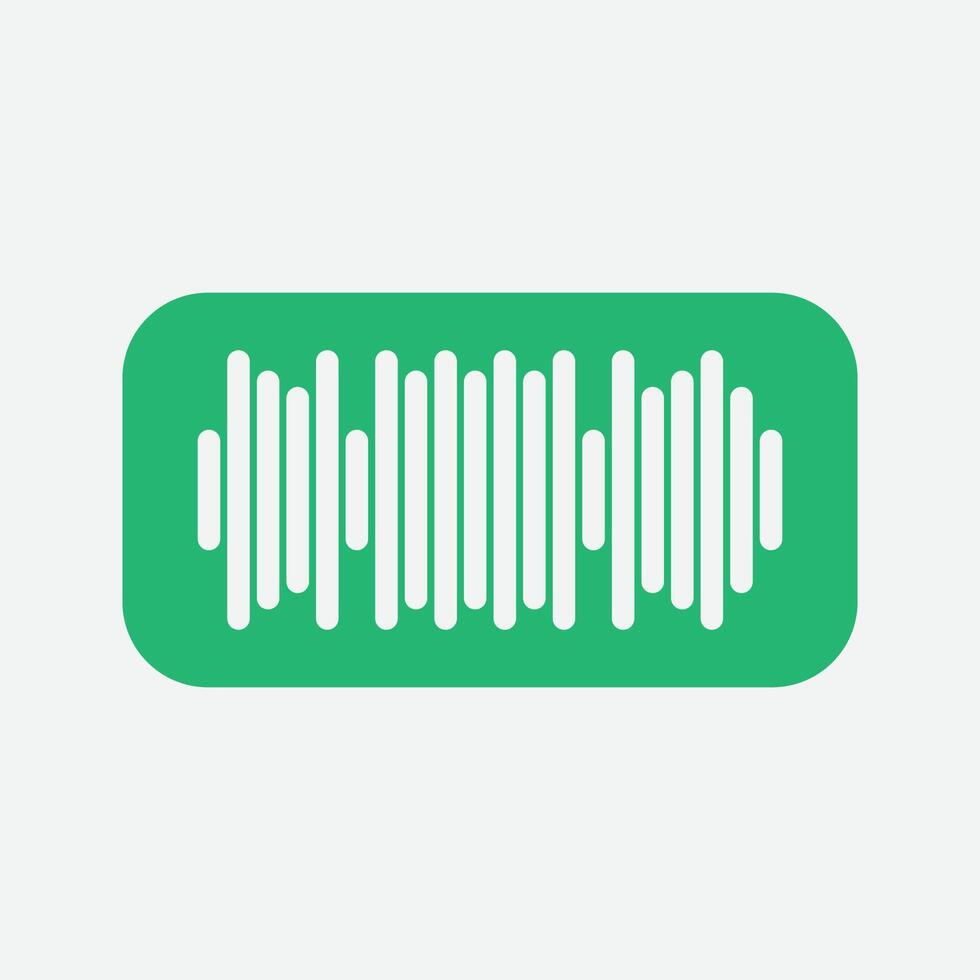
After a full conversation about boyfriend, girlfriend, wife criteria, lots of flirting and even a SWOT analysis, you asked me this question. You asked whether I’m not scared of waking up next to you every day for the next 50 years.
You asked for 7 kisses that day and said you want 7 kisses every single day. You told me you are my safe space and that you are not like other people. That line stayed with me.

This day had a lot of meaning packed into it. After telling a story and explaining what an ideal date looks like for me, you introduced the code word “Green Lantern”. You explained it using the Kamal Haasan scenario from Vettaiyadu Vilayadu. You told me I can say Green Lantern when I ready to be in a relationship with you and you will ask me the question.
That’s when you told me you like me. It wasn’t dramatic, it was calm and honest. You also told me you’d talk to me properly after I spoke with my friend and clarified something. Even in that moment, you were careful and respectful and that mattered a lot to me. 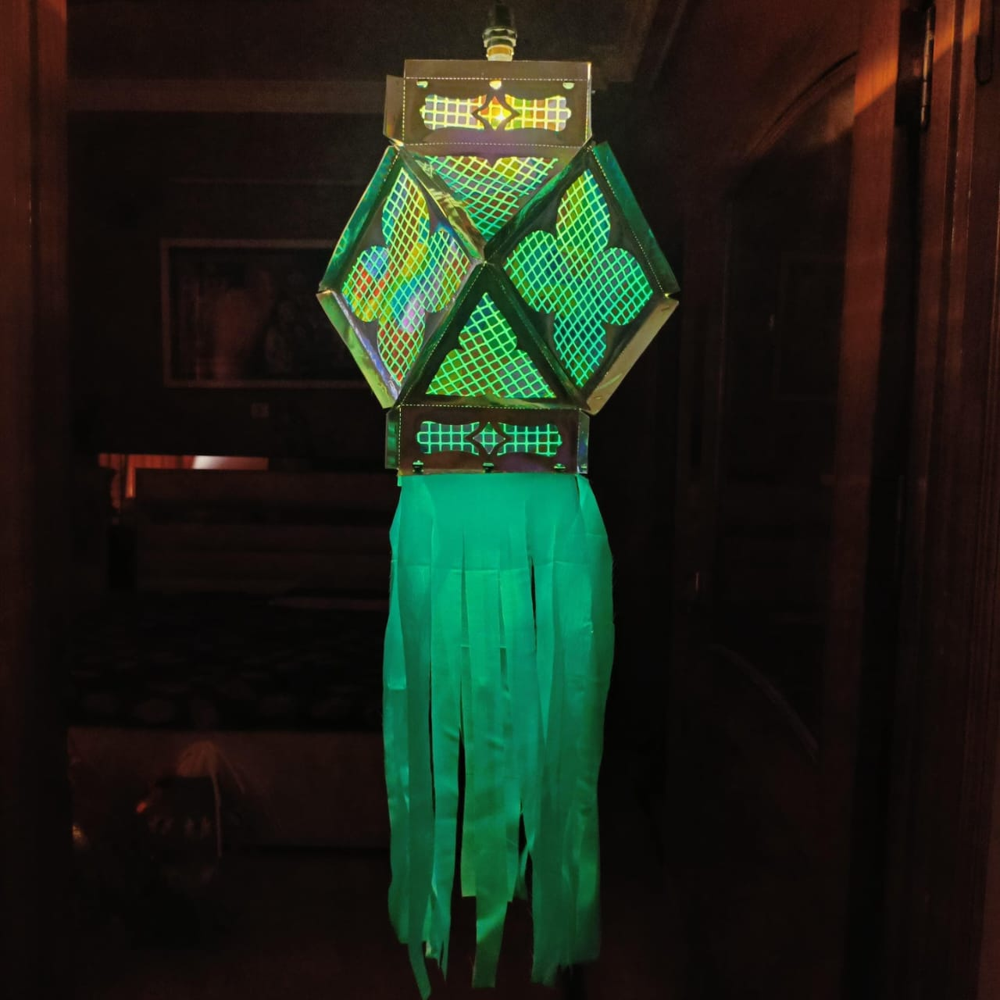
After I got the clarification from my friend, you texted me. You told me you wanted to say “I love you” and that you really wanted to text me the whole day. You said you missed me. Hearing that for the first time felt unreal.
You told me you were having the most genuine conversations with me. I felt so happy talking to you again. It felt like coming back to a place where I belong. That day, I felt so safe, so warm and so sure about you. 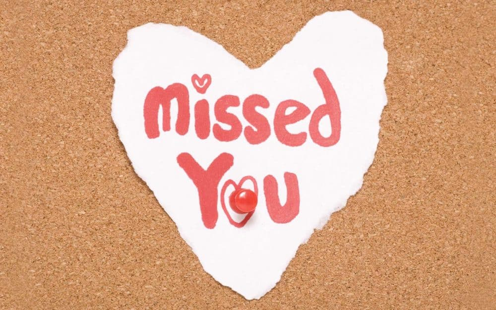
After a long conversation on October 21 about random thoughts and parting scenarios, I finally came to my senses. I realised those stupid conversations were just my overthinking and the truth was simple. I liked you a lot.
So I asked you if you could meet me within one hour. I even told you I didn’t want to waste your time. That was one of the bravest things I’ve ever done. And by God’s grace and because of how kind you are, you agreed.
You were genuinely happy that I came to you. From that moment onwards, everything just started falling into place.
First call, first date, first gift and us becoming a couple
You reached Chennai in the morning. You asked me whether I like you with a beard or without. I said without and you shaved just for me. That alone meant so much.
You called me to reduce my nervousness. That was our first call ever. Then you came and picked me up for our first date. We went to Ciclo Café. You gave me my first gift, a pink crochet rose, which is still my favourite.
I felt so happy being with you. You took a picture of me and called my smile your favourite and you made it a benchmark smile for me. I realised how comfortable I felt around you. You asked me the question and sent the Green Lantern. I said yes. We became a couple that day. We were both so happy, and I still remember the way you smiled.

You played Nee Kavithaigala for me and sent it to me. That song became one of the most meaningful gifts you ever gave me. We went to Soy Soi and had such a beautiful date.
You kissed me a lot that day. I felt deeply loved. I held your hand for the first time and it felt so right. That day without hesitation, I told you that we are going to marry each other. I meant it with my whole heart. 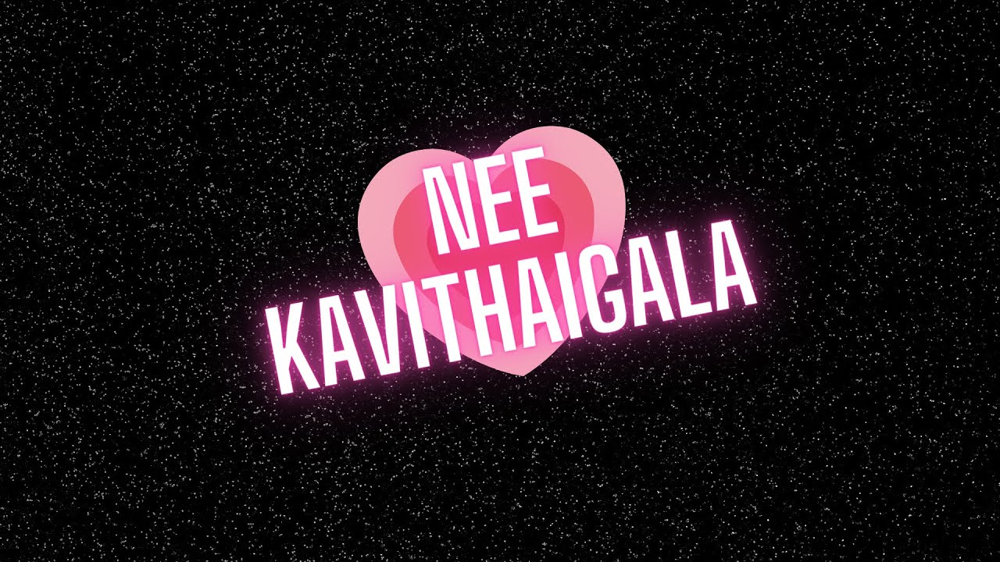
You were the very first person to wish me on my birthday. That alone made the day special. You told me about your 22nd birthday and said we should make it a ritual. Every year on my birthday, you’ll talk about where you were when you were 22, because you’re older than me. You told me you got into IIM Bangalore when you were 22 and hearing that made me admire you even more.
We went to the temple together in the morning. I felt so calm standing next to you there. Then we went for breakfast, bought lipstick and a watch and you dropped me at the university. Before that, we sat and talked for a long time. I was so happy that I got to spend my 22nd birthday with the man I love. That was also the first day we took a picture together. You kissed me a lot that day and from that day onwards, I started spamming your Instagram with love reels because I just couldn’t stop loving you.

After my NPTEL exam, I came to meet you. We went to Indiranagar Park. That was the first time we went there together. You kissed me near the cricket ground and my heart honestly melted.
We walked, talked and then went to Zaitoon. I loved that place with you. We sat very close to each other and I could feel people around noticing how close and affectionate we were. That was also the first time I shared my juice with you. We took pictures together. They weren’t very clear, but they became one of my favourite pictures of us. That day, I loved you a little more than usual.

It was my farewell day and I was wearing a saree. I came to meet you after that. You loved seeing me in a saree and I could see it in your eyes. You held my waist tightly and I loved the way you held me.
It was raining that day. That rain made everything feel magical. That’s when we had our first kiss. On the same day, I kissed you for the first time too. I was wearing the new lipstick you bought for me and I left a lip mark on your cheek. That moment is forever etched in my heart. 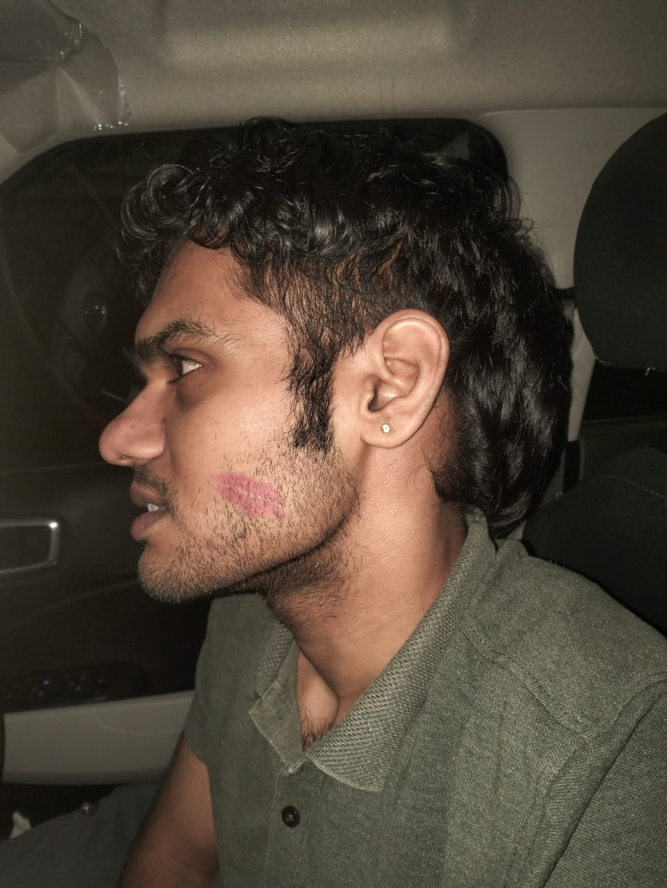
Going to the beach with you was something I didn’t know I needed until I experienced it. We walked along the beach together and you bought my favourite buns for me. That simple gesture meant so much.
That day, I hugged you properly for the first time. A full, tight hug. I felt so safe in your arms. I smelled like you the entire day and I didn’t even want that feeling to fade. It felt like I was carrying a part of you with me. 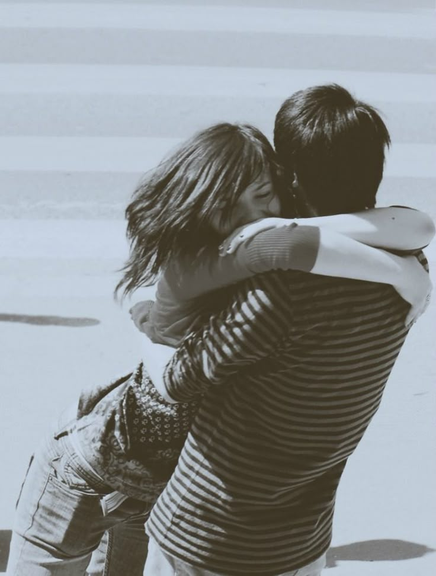
On this day, you shared your childhood pictures with me. Seeing you as a child made my heart so soft. You looked cute, sweet, adorable and so pure. I loved seeing that version of you. It made me feel closer to you in a way I can’t fully explain.
I didn’t just fall in love with the man you are now, but also with the little boy you once were. 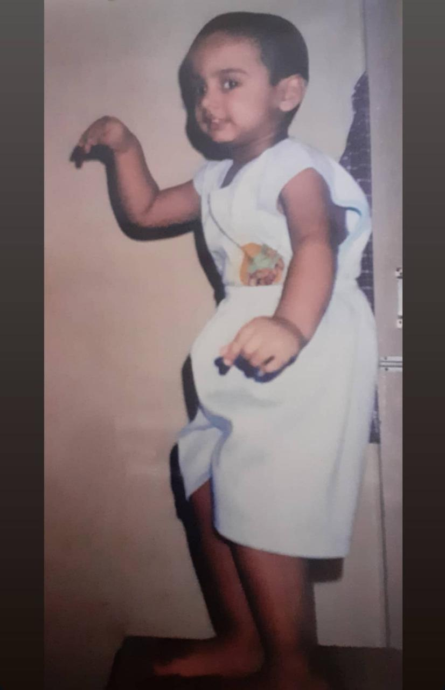
We both wore lavender that day. Matching colors, matching energy. You hugged me, kissed me and I loved how naturally we looked like we belonged together. 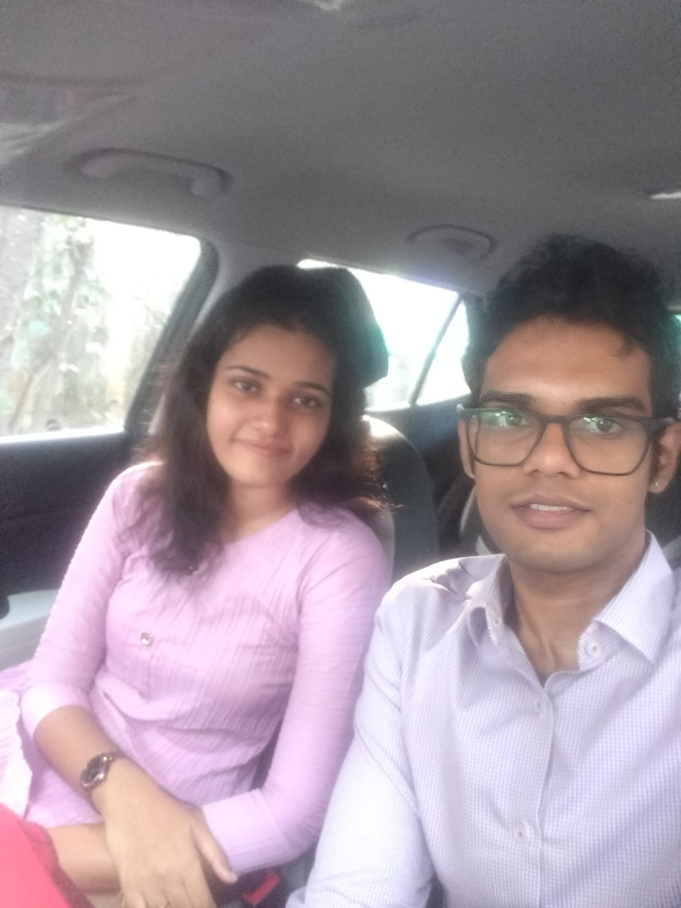
It was a rainy day and we went to our spot. The rain, the silence and just us made everything feel intense and intimate. That day, we explored each other more. It felt natural, safe and deeply comforting. You gave me my first hickey and that moment made me realise how close I felt to you, both emotionally and physically. I trusted you completely and you made me feel respected and wanted. 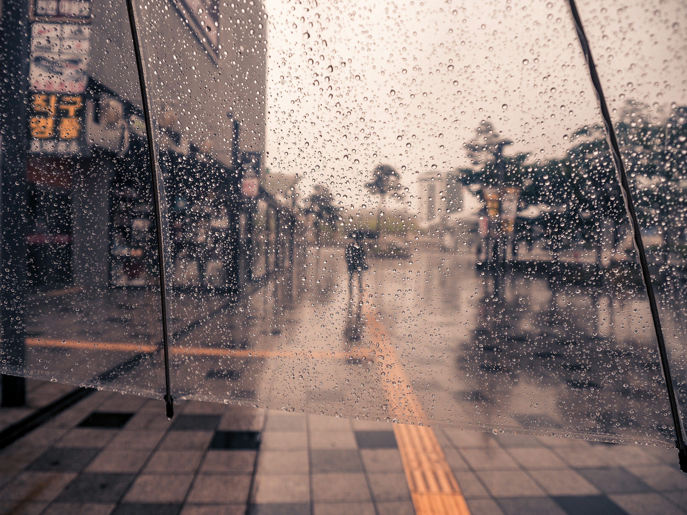
I was in my hometown and I missed you a lot. To feel close to you, I kept singing and sending you songs. I also sent you love letters. You jokingly called my singing “rhymes,” and that made me laugh so much. Even though we were far away, I felt connected to you every single day through those little things.
You plucked a flower near your house and gave it to me. Such a small gesture, but it meant so much to me. I was genuinely happy when I saw it. I even placed it in my hair. That flower felt like love in its simplest form, pure and thoughtful, just like you. 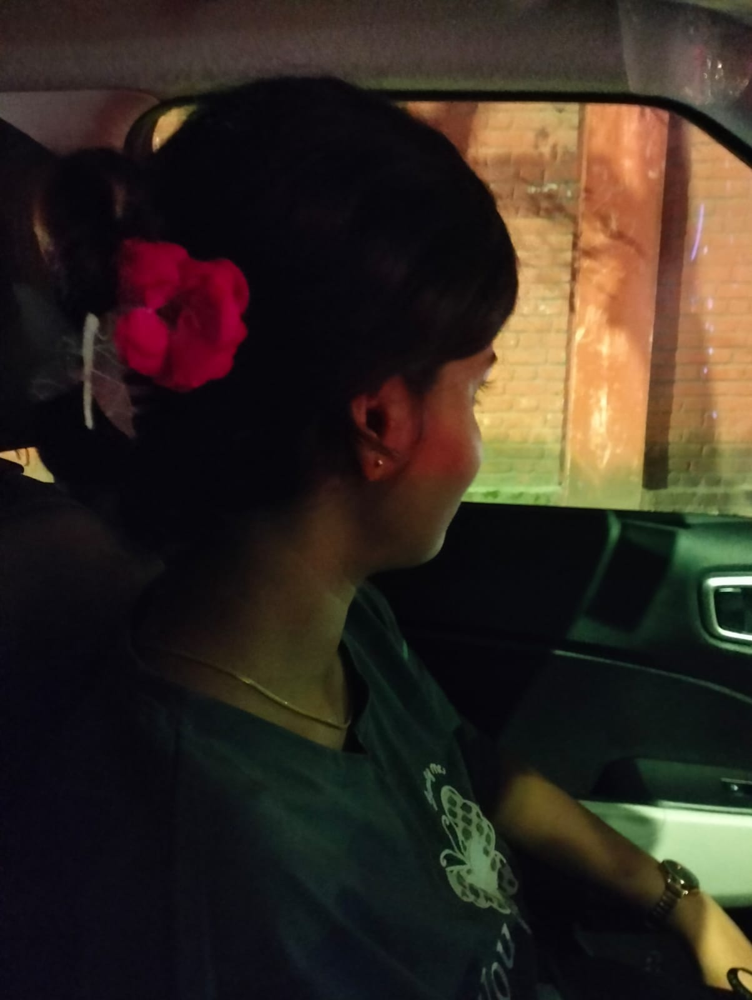
Before January 1, I wanted to surprise you. So I wrote you another love letter, printed it and gave it to you along with a dark chocolate. We went to Ciclo Café after that. We were playing with our legs under the table, laughing and just enjoying each other’s presence. You were so happy and you gave me so many kisses that day.
Later, I gave you your first protein shake. That felt special in a funny cute way. It felt like I was becoming part of your daily life, your habits, your routine.

We started the year together by doing the grape ritual. It felt cute and symbolic, like we were entering the new year holding onto each other. Later in the evening, we met. We shared protein shake, hot chocolate and French fries. It felt warm and comforting, like a soft start to a year where you were already my favourite part.

You wore the shirt I gifted you and I loved how it looked on you.
We went to Mercely’s to eat ice cream. I loved that we walked to reach there. It felt simple and peaceful. You told me I looked so hot that day and the way you hugged me made me feel completely crushed in the best way possible. I felt small, protected and deeply loved in your arms. 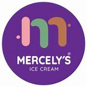
We couldn’t meet as we had planned and instead, you wrote me a handwritten love letter. Seeing that letter made me so emotional. It was one of the most beautiful things I had ever received. I loved you to the moon and back that day. You also explained your business idea to me and I felt so honoured that you trusted me with your dreams. I felt chosen. 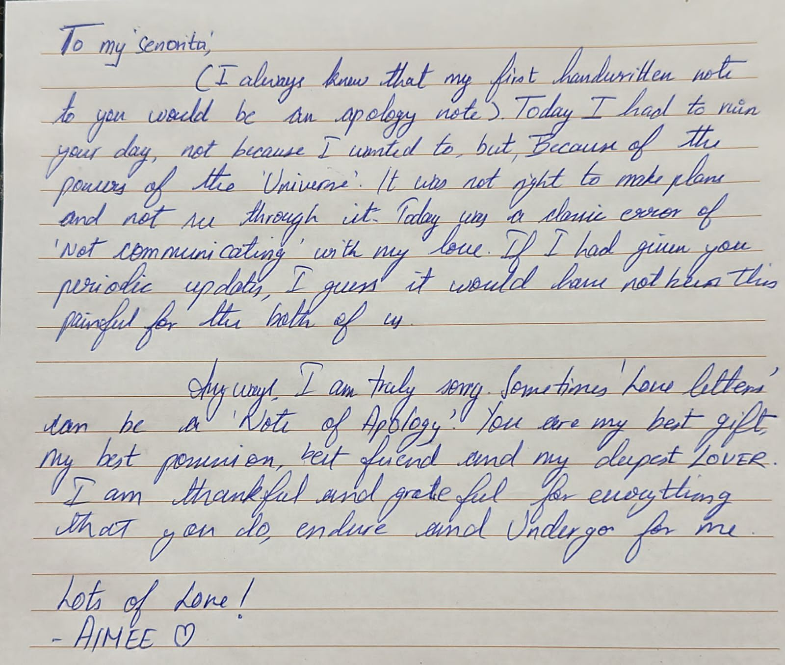
We went to Writer’s Café together. That day was special in so many ways. You gave me two flowers, one daisy and one rose. We were so happy. We played with our legs under the table and you made rockets and talkies using paper like a little child. Watching you be playful and carefree made my heart melt. That day quietly became the foundation of us being the daisy and the rose.

You bought me chocolate because you knew I would be getting my periods soon. You actually researched what would be good for me and sent it. That moment made me feel so deeply cared for. It wasn’t just love, it was thoughtfulness. I felt seen and protected in such a gentle way. 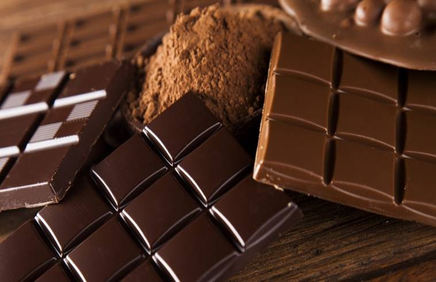
Before leaving Chennai, we video called. We were just enjoying each other’s presence, smiling, not talking but existing together. It felt so comforting. That call stayed with me even after you left. 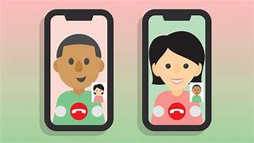
On this day, you got your performance review. You shared it with me and I felt incredibly proud of you. You are truly a superkeeper, not just at work, but in life. Seeing you succeed and knowing how hard you work made me admire you even more. 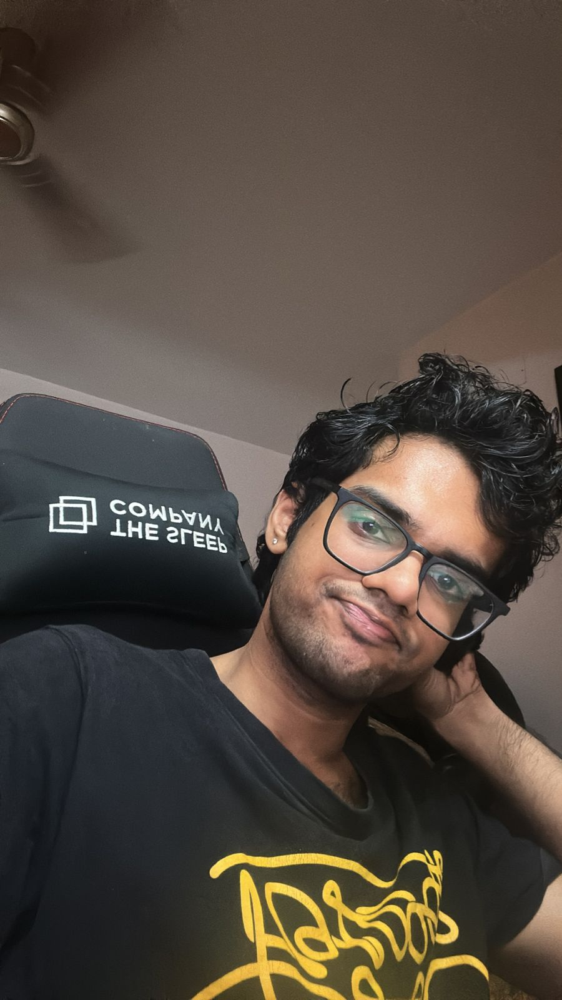
We went to the park for a walk. It felt peaceful and grounding. After that, we went to Delish for gelato. We took so many pictures in both places. And that day, I experienced my first time with you. I felt completely comfortable, respected, safe and loved. There was no fear, only trust. That day truly felt like where the flowers bloomed between us. I loved you so deeply and I still do. I love you so much, Mr. Tanuj ❤️

Little things I remember about you
Why I love you
Not because you’re perfect.
But because of the way you are.
I love your voice.
I love the way you say “sollunga madam.”
I love that when I ask you to smile, you actually do.
I love the way you hold my waist, hug me tight and kiss me.
I love that you check if you hurt me after hard conversations.
I love the kiss you give me after our goodnight calls.
I love the way you touch my hair and gently rub my scalp.
I love the way you hold my hand.
I love when you take pictures of me.
I love the effort you put into growing and becoming better every day.
I love your responsibility, your patience and your kindness.
Read this when
You miss me
You're tired
You’re overthinking
You’re smiling already
You just want to feel close
I’ll still be here.
Today
Different cities this Valentine’s Day.
But what we feel hasn’t moved an inch.
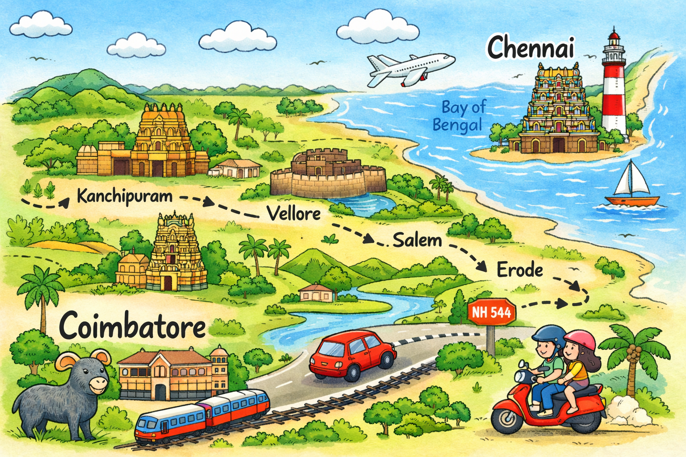A letter for you
I didn’t put this on the screen for a reason.
This is meant to be read slowly. In your own time. Maybe when you’re alone.
Download the letter